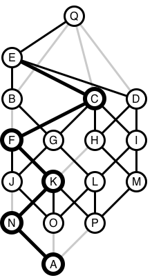

Judge's Notes for Mark of the Wizard:
Data set 1 is in the problem figures
To keep the figures below less busy, they do not show the
lengths(times) directly, but the black paths are on a shortest path to
the top (but the shortest path may not extend back to the
bottom). The other edges cannot be used in a minimal path from
bottom to top, and are colored gray. One optimal placement of
markers is shown by the thicker circle boundaries. Each such
circle will have at least one thicker black edge going up from it - a
possible choice for the direction marker.
Data set 2: (from sample data)
Data set 3: (from sample data)
Data set 4:
Data set 5:
Data set 6:
Data set 7:
Data set 8:
Data set 9:
Data set 10:
Most of the remaining data sets have many vertices and edges, and the
system is an elaboration of the one described for earlier figures, to
allow most automated generation: The lengths(times) of the black
edges are proportional to the difference in the y coordinates of
the ends. Other paths (with lengths not ending in 0 in the input
data)
are longer, and are shown in gray, and will not appear in any minimal
path.
Data set 11: Not regular. Big
Data set 12: Everything works: Lots of long paths.
Data set 13: Very long best paths. There is a shortest path
with 4 edges, but it leads to more markers than 1.
Data set 14: (only one minimal path through)

Data set 15: Edge case.
Data set 16: max markers